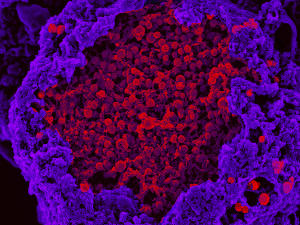
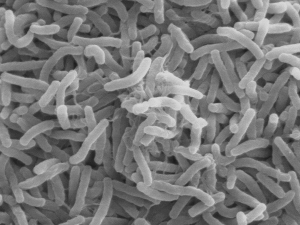

Where are Neglected Tropical Diseases?
Home
Where
NTD research is a global effort, linking researchers at the
Wellcome Trust Sanger Institute
with collaborators from all over the world
Below are just a small selection of these collaborators
Although devastating, NTDs are a fascinating to work with
Read some of the stories written by the researchers themselves

Seeing through blindness
Angèle Bénard
More

Pandemic on a plate
Daryl Domman
More